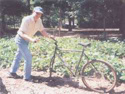
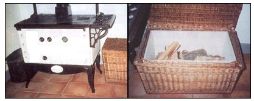

Thanks for the focus on "Reaching for the Real Joy" (December/January 2003). Here are three ways we cut down on commercialized clutter during the holiday season:
1. Violin lessons for Chanukah gift: eight lessons-one for each night. After two months we'll see whether my daughter's enthusiasm has blossomed or flagged, and take it from there. My parents are classical music fanatics, so they loved fulfilling this wish for their granddaughter.
2. A live rabbit and all the props. On each night of Chanukah, our daughter will receive one thing she needs to properly care for her new pet-a water bottle one night, a bundle of hay the next, food, a rabbit comb, etc. The gifts will build in significance to the hutch on night seven, and on the eighth night, the bunny herself.
This approach-devised jointly by my daughter and me-has really piqued her interest in caring for the rabbit. (Wish us luck pulling it all off.)
3. I cannot stop making leaf candle lanterns. It sounds completely hokey, but they are quite beautiful. Even a 4-year-old Can do this.
Take a glass jar that was headed for the recycle bin, some nice colored fall leaves, a glue stick and some of that white tissue paper I know you can't bear to throw away. Cover the glass with glue stick, put on a layer of tissue paper, then more gluestick and leaves, and another layer of paper. Turn out the lights, pop in a candle and start smooching.
JUDE RUBIN
Portland, Oregon
I wanted to tell you about the family co-op my husband and I started. I'm kind of old-fashioned in a way, or maybe just a rebel having a personal battle with our modern fastpaced society. I'm 26 and I have my babies at home. My husband and I have been married four and a half years and this will be our fourth baby in four years. We cook, bake bread, make cheese, sew, make soap and candles, and milk goats. Josh is a computer nerd. We don't have a television. We do a lot of gardening and reading, and we eat mostly organic food. Our family has so much fun together. I'm a full-time mom-except on Wednesdays when Josh takes the day off to be with the kids, while I focus on the co-op or my artwork. We also travel; we love eastern Europe, Spain and Austria.
A couple of years ago a college-age girl asked me to teach her all these nearly forgotten skills in exchange for voice lessons. Before long a hunch of other young women wanted to come, too. They were raised by parents who were committed to full-time jobs outside the home, and they never had learned a lot of the practical homemaking stuff. So I started teaching creative homemaking classes to help them prepare for a successful family life. Then I started a community garden, from which a local sharing network called "Simpler Times Family Coop evolved. There are about 400 people participating. We share skills, books, gardens and homemade goodies.
We also share a desire to live our lives for the things that are really important and not give in to the pressures of society to work ourselves into the grave with nothing to show for it but a bunch of stuff and broken families.
SARAH BROWN
Fortville, Indiana
If your readers are anything like me they are always losing that little tube that comes on the side of a can of WD-40 lubricant. I have found a neat way to remedy this by recycling a Bic ink pen. Simply remove the ink cartridge and duct-tape the pen to the side of the can. Put the little tube inside the empty pen and put the cap back on.
STEVE DAY
West Plains, Missouri
I own and operate a small (eight-acre) ornamental plant nursery in southeastern Virginia. An operation of this type can be started with a few hand tools, a small truck and a reliable water supply, and then expanded slowly as markets are found and developed. Here are the rules that have worked for me:
1. Keep all operations simple (less cost and complications).
2. Grow plants that people want (ornamentals and delicacies).
3. Provide items that store well and can be kept or grown until the next year.
4. Provide the customer with the most-perfect finished product possible.
5. Educate and cultivate customers (except those who want something for nothing) with patience and honesty.
6. Research any operation that may be able to educate you on production and marketing.
7. Learn how and where to obtain resources (mulch, compost, sand, etc.) at the least cost.
CLAUDE REESON
Spring Grove, Virginia
Want to grow your own grain? Dig shovel-wide swaths anywhere (garden, meadow, brush fields, on hills in contour) about 3 feet apart and plant winter-hardy grains in fall. They will grow some and then rest until spring. In spring, dig swaths between the grain and plant early legumes (beans, peas, soy or buckwheat, etc.) All will be ready to harvest in summer. By hand, harvest each crop separately into bags hung on your shoulder. You'll have your year's basic dry foods grown, harvested and stored.
After harvesting, the "weeds" in the spaces between the swaths slowly grow over the bare ground, and cover, protect and cool it.
Dig next year's swaths between last year's swaths. Digging becomes easier each year and soil becomes richer. Soil organisms are protected. "Good" insects and organisms kill off "bad" insects and organisms. You lose a little bit of crop, but so what? No fertilizer, no cultivation, no worry, no crop failure or expense.
PAUL DOERR
Fairfield, California
I 'd nearly given up on trying to hatch duck eggs in an incubator-the hatch rate was typically small, and the incubator developed a putrid odor midway through the incubation in spite of following the directions. Some of my favorite duck hens were getting older though, so I had to reconsider artificial incubation for any fertile eggs they laid.
I decided to use a water-soluble disinfectant that safely sanitizes hatching eggs. (These disinfectants are available through poultry supply catalogs.) Since duck eggs are often grimy when collected-thanks to the mother hen's muddy feet and the less-than-ideal locations of some nests-it made sense that any bacteria present would thrive under the heat and humidity of incubation. I mixed the disinfectant in warm water and gently cleansed the eggs as I collected them to fill the incubator. In addition, I made a practice of always washing my lands in antibacterial soap whenever I handled the eggs.
The results surpassed my expectations; in fact, my first trial hatch using sanitized eggs was successful enough that I actually had a surplus of ducklings. This is an effective and inexpensive technique that I'd recommend to anyone experiencing lackluster results with duck eggs in an incubator.
DENNIS DIVINE
Joplin, Missouri
There are many articles on producing maple syrup but you can take a shortcut and use the sap for making tea, coffee and hot chocolate. Plus you will be using organic water rather than the off-tasting municipal tap water.
I celebrate the end of the cold season by tapping the lone sugar maple on my suburban front lawn. You don't need a 40-acre sugar bush to enjoy this ritual. Select a maple having a diameter of more than 10 inches and insert only one tap.
The sap rises in late winter when thawing during the day is followed by freezing at night. When the time is right, drill a hole with a 7/16-inch bit about 1 1/2 inches into the trunk, preferably on the sunny side. Into this hole, tap in the spile with a wooden mallet. (Spiles are sap collecting spouts with a hook for suspending a pail.) Don't buy an official (expensive!) metal collecting pail with lid; recycle a gallon plastic juice jug, converting it to a covered receptacle. Before beginning, sterilize both the spile and the jug with boiling water.
Drip, drip, drip. You are now in business. After one jug has been filled, re place it with another, and store the sap in the refrigerator. You don't have to go to all the trouble of boiling off water to produce maple syrup. (About 36 gallons of the sweet watery liquid have to be evaporated for one gallon of pure syrup.) Skip this step and just boil the sap and use it to make your tea. Because the sap contains 2 percent to 3 percent sugar, the sweetness it imparts is equivalent to a teaspoon of sugar in a half-pint mug. If your outdoor sugaring labors have left you with a chill, you may care to fortify, for medicinal purposes, your hot maple tea with a tot of Jamaica rum. When you have finished sugaring operations for the year, remove the spile and the hole will seal itself.
ROBERT MCCAULEY
Kitchener, Ontario
Need a push plow but can't find a new or used one cheap enough (or in good enough shape)? Well, if you can find an old bike and a plow blade, you can build a push plow without too much effort.
A dirt bike works best because the tires are wider, with bigger tread, so it rolls well through the dirt. I removed the pedals, brakes, cables, the front tire and the straight handlebar. I removed the stem bolt and stem at the steering mechanism, turned the front tire forks around backwards and reinserted the stem and bolt, so the front tire forks faced the back of the bike. I removed the high handlebar from an old banana-seat bike and inserted it backward on the bar clamp, so the handlebar was positioned to hold from the front of the hike (as pictured above).
The last step is to attach the plow-blade to the front tire forks. I was fortunate to already have a plow with an adjustable iron bar. It was a simple matter of drilling a set of holes through the front tire forks to match the hole spacing on the iron bar, then attaching the bar with bolts through the new holes. In this case, the front tire forks were wider than the iron bar; to securely hold the bar inside the front tire forks I used a threaded bolt and put a nut, flat washer and lock washer on each side of the bar. You will have to devise some way to attach the plow- to the front tire forks at the appropriate distance and slant.
Once the plow is in place, you are ready to go! I found that it works best to make a small trench with a hoe for the hike tire to follow. The handlebars can be adjusted up or down to give the best pushing power for your height and the depth of the plow
DAVID CAWTHON
Warm Springs, Georgia
Though a wood fire brings a wonderful glow to a room, it often creates a bit of a mess. The wood box or log holder seems to continuously exude bark and sawdust. I came up with an attractive remedy using an old basket and some plywood.
I looked at the old hinged wooden basket that once held my daughter's childhood blocks and saw a nice wood basket, but I knew it wouldn't hold up to logs being tossed into it. The plywood insert that my carpenter husband and I created has a tight, dust-free wood box that looks nice in any room.
This project is quick and easy and requires only simple tools such as a screw gun ,and a circular saw. Any square or rectangular basket large enough to hold firewood can be used.
ELAINE MORLEY
Bernardston, Massachusetts
This season we put up more than 300 jars of jellies, pickles, relishes and tomatoes without heating up the kitchen or spending hours waiting for a large pot of water to come to a boil on the kitchen stove. Our secret? Canning alfresco.
We own a single-burner propane unit designed for outdoor use. These burners are renowned for bringing large quantities of water to a rolling boil in a short amount of time. (Currently marketed as Eastman Outdoors model 38065 Aluminum Turkey Fry Pot with a 170,000-Btu burner.) One night I had a brainstorm-why not use our propane burner for canning? The results have been dramatic and prolific.
This system has saved us an enormous amount of time, kept the kitchen from overheating and allowed us to spend more of the day outdoors.
JEFF RYAN
South Portland, Maine
|
 COURTESY DAVID CAWTHON |
 COURTESY ELAINE MORLEY |
|